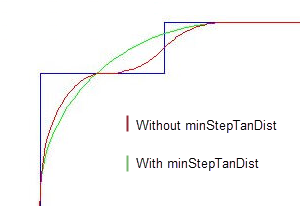

target_curve
Calibre nmOPC Tcl Scripting Commands
Creates a curve from the target based on the settings and moves sites to the new curve.
Usage
target_curve [pattern num] [‑moved] criticalDistance um
[cornerRadius val] [cornerRadiusConcave val] [cornerRadiusConvex val]
[stepRadiusConcave value stepRadiusConvex value] [minStepTanDist val]
[jogRampConcave value jogRampConvex value] [colinearAngleTolerance degrees]
[linearRatio {true | false}] [lineEndRatio val] [spaceEndRatio val]
[lineEndWidth value] [spaceEndWidth value] [maxJog val] [jogMode {1 | 2}]
[preferMid {true | false} [midSpanExt value] [maxMidSpan value]]
[roundCorner {true | false} [roundedCornerRadius value]]
[{emulate | spline} [concave_adjacent val] [convex_adjacent val]]
[‑tag name override…]…
[‑outLayer name]
Arguments
- pattern num
An optional argument used for multi-patterning. Set num to limit the site move to the sites of a particular pattern. The num value must match that of a layer statement.
- ‑moved
An optional argument that causes the curve to be generated using the current position of the opc layer’s fragments. This can be useful for sequential retargeting. By default, sites are moved on to the generated curve. This can be disabled with “adjust_moved_target_sites no”.
The ‑moved argument cannot be used if pattern is set to a target layer.
- criticalDistance um
A required argument specifying the smallest feature in microns that must be resolved. The default value is (Ro/3), where Ro is the resolution value obtained from the optical model parameters (lambda/NA).
- cornerRadius um
An optional argument that is used at corners to estimate the achievable target. You should optimize this parameter around the default value by plus or minus 50% to obtain the best results for their applications.
The value must be greater than 0. The default is criticalDistance.
- cornerRadiusConcave val
An optional argument that specifies the radius of curvature for concave corners. The radius of curvature used to estimate the achievable target. This value is also used for space ends. The value must be greater than 0. The default value is cornerRadius, which in turn defaults to criticalDistance.
- cornerRadiusConvex val
An optional argument that specifies the radius of curvature for convex corners. The radius of curvature is used to estimate the achievable target. This value is also used for line ends. The value must be greater than 0. The default value is cornerRadius, which in turn defaults to criticalDistance.
Note:In jogs and s-shapes that have overlapping convex and concave corners, the larger of cornerRadiusConcave or cornerRadiusConvex is used.
- stepRadiusConcave value stepRadiusConvex value
An optional pair of arguments that allow setting a smaller value than cornerRadius for S‑steps. (An S‑step is a concave corner and a convex corner separated by a single fragment.) You cannot use stepRadiusConcave and stepRadiusConvex separately.
The stepRadius arguments are ignored for overlapped S‑steps when roundCorner true is set.
The setting for both arguments must be in the range defined by the minimum and maximum of cornerRadius, cornerRadiusConcave, and cornerRadiusConvex. If they are set to a value outside the range, the run issues a warning and uses the nearest end of the range.
- minStepTanDist val
An optional argument that sets a minimum tangent distance for both legs of a step shape. If the tangent distance on either side is not met, the step is smoothed. In effect, it defines the minimum curvature.
The default value is 0, no required minimum distance.
Figure 1. Effect of minStepTanDist- jogRampConcave value jogRampConvex value
An optional pair of arguments that allow setting different values for the distance between the tangent point and the jog corner for concave and convex jog corners. (Whether an edge segment is a fragment or a jog is controlled by maxJog.) You cannot use jogRampConcave and jogRampConvex separately.
The setting for both arguments must be in the range defined by the minimum and maximum of cornerRadius, cornerRadiusConcave, and cornerRadiusConvex. If they are set to a value outside the range, the run issues a warning and uses the nearest end of the range.
- colinearAngleTolerance degrees
An optional argument that specifies in degrees how different two adjacent fragments may be and still be considered as collinear. The value must be an integer. The default value is 0 degrees.
This option is useful when a design contains non-45 skew angles as it can allow the algorithm to better recognize a straight edge, as shown in the figure below. The sharper outer contour (maroon) occurred because the two fragments of the edge were treated independently. Adding “colinearAngleTolerance 1” produced the smoother green contour.
Figure 2. Effect of colinearAngleTolerance 1
- lineEndRatio val
An optional argument that allows for the specification of an elliptical curve at line ends. The curve is tangent to the side at a distance val from the corner (where val is computed by multiplying the width of the line by the ratio). The default ratio is 0.5 (resulting in a circular curve). This applies to narrow line ends whose width is less than two times the corner radius.
- spaceEndRatio val
An optional argument that allows for the specification of an elliptical curve at space ends. This option otherwise performs similarly to the lineEndRatio option. The default value is the lineEndRatio setting.
- lineEndWidth value
An optional argument that specifies the minimum width at which an edge with two convex corners is not classified as a line end. Edges with length less than value are treated as line ends. The units for value are user units. The default value is 2 * cornerRadiusConvex.
- spaceEndWidth value
An optional argument that specifies the minimum width at which an edge with two concave corners is not classified as a space end. Edges with length less than value are treated as space ends. The units for value are user units. The default value is 2 * cornerRadiusConcave.
- maxJog val
An optional argument that sets the maximum length at which an edge is considered a jog and not a feature. Smaller values cause fewer edges to be considered jogs. The units for val are user units. The default value is the value of jog_freeze (if specified) or approximately 0.292893*radius, where radius is the minimum of cornerRadiusConcave, cornerRadiusConvex, and cornerRadius.
- jogMode {1 | 2}
An optional argument that switches modes of jog handling.
1 — Keep tangent points on the first fragment of an edge. If there is a jog on the line-end near the corner, tangent points will be before the jog. This is the default.
2 — Tangent points on the first fragment of an edge are treated the same as other tangent points and appear a standard distance from the corner. This makes the curve less sensitive to small jogs.
- preferMid {true | false}
An optional argument that, if set to true, specifies that the midpoint handler should be used where possible, instead of S‑steps or quarter circles. This means that instead of a curve being drawn, a straight line will be used. For some curve targets, this is may be a more appropriate fit than curves that are typically used. The default value for this parameter is false.
- midSpanExt value
An optional argument that specifies a floating point value between 0 and 10 that controls the slope of the line drawn when preferMid is enabled. The default value is 1, which draws a 45-degree angle line through the mid point of a span. Increasing the value of midSpanExt increases the length of the line drawn through the span and results in a shallower slope. By default, the extent of the line drawn is equal to the length of the span (value is set to 1). Increasing the value to 2 means that the extent of the line drawn will now be twice as long as the span, and the slope will be much shallower.
- maxMidSpan value
An optional argument that specifies a length in user units (0 to 1 micron) that determines the maximum size of a span to be handled by the midpoint handler when preferMid is enabled. Spans longer than this value will be represented by curves. The default value is 2⁄3 of the critical distance (CD).
- roundCorner {true | false} [roundedCornerRadius value]
An optional argument that causes Calibre nmOPC to round concave corners that are shorter than cornerRadiusConcave. When set to true, the target is moved out towards the printed image by roundedCornerRadius. You can use the optional roundedCornerRadius keyword to increase the distance from the original corner that the target is moved. The default value for this parameter is false.
- {emulate | spline} [concave_adjacent val] [convex_adjacent val]
An optional argument set to control site placement based on offset.
emulate — When shifting sites, use a continuous angle-weighted distance function. There is no limitation to degree changes.
spline — When shifting sites, use a continuous angle-weighted distance function but do not shift too far from the original OPC edges.
Both concave_adjacent and convex_adjacent require that emulate or spline be specified. See “retarget_layer” for a detailed discussion of emulate and spline.
concave_adjacent val — An optional argument to emulate or spline that causes fragments wholly within val from a concave corner to be treated as concave adjacent. Concave adjacent fragments have their sites shifted based on minimum offset.
convex_adjacent val — An optional argument to emulate or spline that causes fragments wholly within val from a convex corner to be treated as convex adjacent. Convex adjacent fragments have their sites shifted based on maximum offset.
The default distance for both concave_adjacent and convex_adjacent is 5*Nyquist.
- ‑tag name overrides…
An optional argument set that allows you to specify different overrides for a particular tag set. Up to 16 different tags can be specified. Any number of overrides can be specified.
The arguments that can be specified within a -tag set are limited to the following:
cornerRadiusConcave and cornerRadiusConvex
colinearAngleTolerance
jogMode
jogRampConcave and jogRampConvex
linearRatio
lineEndRatio
lineEndWidth
maxMidSpan
midSpanNext
preferMid
roundCorner
roundedCornerRadius
spaceEndRatio
spaceEndWidth
stepRadiusConcave and stepRadiusConvex
- ‑outLayer name
An optional argument that writes the curve to a layer named name in the layout output.
Description
This optional command is similar to setlayer curve_target, but uses the whole curve to determine site placement. For setlayer curve_target if the distance between target and OPC layers is large enough, corners may not receive enough sites for good results. The target_curve command, in contrast, can redistribute or even add EPE sites. Additionally, setlayer curve_target runs before any OPC iterations whereas target_curve can generate curves during iterations, including the results from TARGET_CONTROL, and output a retarget layer or move EPE sites without creating a layer for the curve.
The target_curve command moves EPE sites. This can cause paired sites to become misaligned. If you are performing checks that rely on site pairs, regenerate them after using target_curve.
This command cannot be used with retarget_layer.
Examples
The following example creates a smoothed target layer for a layer with a minimum feature size of 40 nm:
target_curve criticalDistance 0.04 cornerRadius 0.05 \
lineEndRatio 0.6 -tag tag_1 cornerRadiusConvex 0.08 \
-tag tag_2 cornerRadiusConvex 0.04